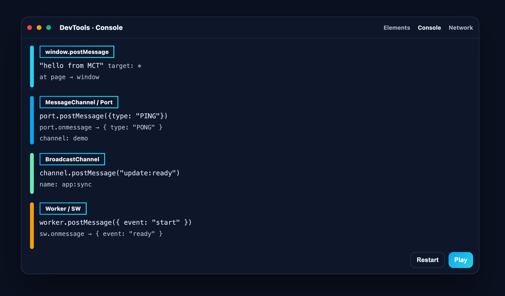

메시지 채널 흐름을 깨뜨리지 않고 관찰하세요
window.postMessage · MessageChannel · BroadcastChannel · Worker/ServiceWorker의 메시지를 색상과 그룹으로 정리해 DevTools 콘솔에서 한눈에 확인할 수 있습니다.

왜 MCT인가요?
-
다양한 채널 관찰
window.postMessage, MessageChannel/MessagePort, BroadcastChannel, Worker/SharedWorker, ServiceWorker까지 한 번에.
-
콘솔에 최적화
색상/그룹으로 스레드처럼 묶어서 흐름을 따라가기 쉽습니다.
-
안전한 읽기 전용
원래 동작을 변경하지 않는 비침투적 래핑으로 신뢰성을 높였습니다.
-
상태 전환
팝업에서 켜기/끄기 전환, 전역 상태는
chrome.storage.sync에 보존됩니다.
빠른 시작
- 주소창에
chrome://extensions입력 - Developer mode 활성화
- Load unpacked → 저장소의
extension/선택 - 확장 아이콘을 고정한 뒤, 켜기/끄기로 로깅을 제어합니다.
웹스토어 배포 전까지는 수동 로드로 사용하세요.
사용법
아무 페이지의 DevTools 콘솔에서 실행해 보세요. 콘솔에 MCT 로그가 출력됩니다.
window.postMessage("hello from MCT", "*");여러 채널을 한 번에 시험하려면 로컬 Playground를 사용하세요. pnpm run docs로 정적 서버를 실행한 뒤 /playground/에 접속하세요.
동작 원리
content.js가tracker.js를 삽입해 페이지 컨텍스트에서 안전하게 내장 객체를 래핑합니다.- 메시지는 색상/그룹으로 정리되어 콘솔에 출력되며,
- 토글 이벤트(
MCT:SET_ENABLED)로 로깅을 제어합니다. - 원래 동작을 바꾸지 않는 읽기 전용 설계입니다.
필요 권한: storage, tabs
대량 메시지 환경에서는 성능을 위해 필요할 때만 켜거나, 콘솔 필터링을 함께 사용하세요.
FAQ
성능에 영향이 있나요?
일반적인 개발/디버깅 시나리오에서 영향을 최소화하도록 구현했습니다. 대량 메시지 환경에서는 로깅을 꺼 부하를 줄일 수 있습니다.
프로덕션 페이지에 사용해도 되나요?
개발/테스트 용도로 권장됩니다. 프로덕션 환경에서는 필요한 시점에만 켜 주세요.
무엇을 로깅하나요?
window.postMessage, MessageChannel/MessagePort, BroadcastChannel, Worker/SharedWorker, ServiceWorker의 postMessage/수신 메시지 이벤트를 다룹니다.